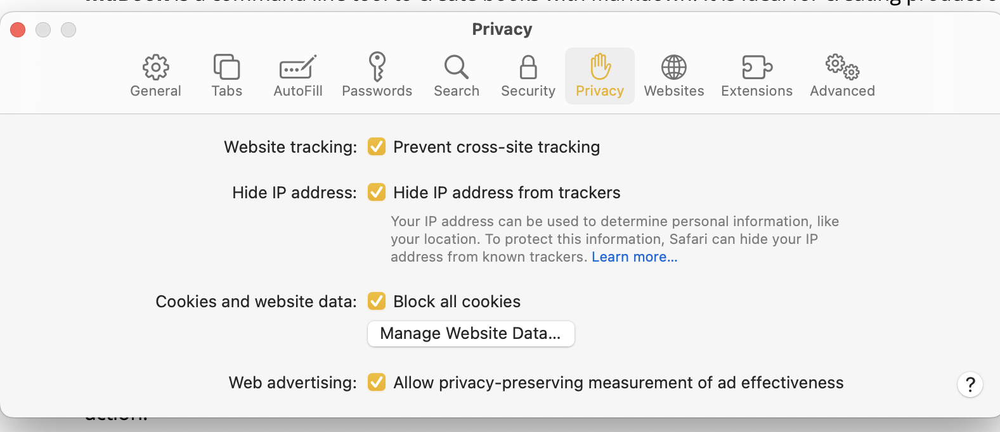

arjun uvaach -> Arjuna spoke ..
Arjuna was a friend and life-long student of Krishna. His voice stands for the questions we mortals have when tested and confused. And also the magical discernment after Krishna unveiled the knowledge unto him. Their conversation, amidst the battlefield, is among the most potent narratives ever penned down - Bhagvad Gita - gods’ song!
At the end of this conversation, Arjuna said (uvaach)
Nashto Moha , Smritir Labdha
Having attained the wisdom, I am now devoid of all illusions.
It is not uncommon that we get temporary relief from cyclic illusions (Moha). Such events - loss, fear or rejection - normally lead to depression because they leave us in a lowly vacuum. Gita on the other hand, spotlights truth through wisdom grounded in rational logic (Smriti). Instead of seeking exit (sanyasa), it welcomes the precious gift we all are endowed with - human experience. In doing that, it provisions lasting peace and worldly success - a win-win. Gita is for everyone - it is not religion, race or place specific.
This publication aspires to decrypt Gita wisdom - from its history to its timelessness. It is meant to be a working place for the ideas and artifacts surrounding the epic.
icons and navigation ..
- cheeseburger menu on top left toggles the chapters’ menu.
- on mobile devices, you may swap right to open the chapters index.
- search the book using the magnifying glass:
- turn pages by clicking the left and right angles: . On mobile devices, the angles show up at the bottom of page.
- You can also navigate by using your keyboard’s left and right arrow.
- On the top right of the page, you can visit its GitHub repository, where the content of this publication lives.
content ..
As you will see when you toggle the chapters, this web app has three main sections :
mathura (work in progress)
The first section is a historical narrative. It discovers a period five to seven thousand years back - around the city of Mathura. It ventures into the time when we first adopted written word as primary medium of communication.
With text, we learnt to send information to distant places in space-time. Gita is the first immutable message preserved for the future generations. It underscores Karm yoga as a path to gradually accumulate divine value ( Daivvy Sampad) and finally be one with the most valuable - one immutable and inexpressible.
Mathura was the hotspot of writing revolution - our move from speech to text as store of information. It laid the founding ideas of even bigger shift that happened in nearby city of Dwarka - discovery of gold as a store of value.
From barter to bitcoin - value storage always follows the properties of information.
- barter was synchronous like the spoken word
- gold allowed us to preserve value the way written word preserved the information
- bitcoin is gold of internet as written word morphed into digital.
gita
The second section is original translation of Bhagvad Gita in English (Kiasri Mohan Ganguly - 1896).
Gita is the source of Karm Yoga - work protocol. While Karm Yoga is proven means to exit sufferings of this world, it also has profound implications the way we approach value exchange. It laid the spiritual foundation for Nishkaam Yazna to enable contemporary society adopt work ethics - foremost example being Arjuna who wanted to shun his responsibility as a warrior. Finding peace and prosperity in proof of work is relevant even today - it is a timeless idea.
The translation is followed by my essays discovering core concepts of Gita. This ‘point of view’ may be useful to “tech-savvy” readers who desire to see Gita in prevailing rationale of popular science.
mahabharata
The third section is the original translation (1896) of the entire epic. I recommend reading Ganguly's preface to appreciate the guiding motivations of translation work — an immense task without the luxury of modern computing tools.
As per Swami Angnananda, a foremost Gita scholar, the information that Dwaipayana (writer of Gita) wanted to communicate was by design, kept center-folded in a highly immersive narrative - Mahabharata. So immersive that even after seven thousand years, the epic is as interesting a read as the day it was written.
freedom tech
Part of the mission 1 is to promote freedom of internet. Freedom in this context means a reading experience as it was meant to be - Cookies free , Trackers free, Advertising free !
A publisher can infest webpages with any number of trackers - sometimes unknowingly. It is for them to make sure they don’t use “plug and play” code such as Google Analytics. It saves the readers from hidden profiling and pesky advertisements. Freedom is not only a readers’ right, it is also a good design choice - it makes pages load faster. I wasn’t surprised cnn.com uses as many as 21 trackers !

As a reader, you can configure browsers to block cookies. For example, in Safari press “command + Comma” for privacy settings.

However, if you did that, you won’t be able to load most of the websites (Facebook or Instagram). A better compromise is to use “duckduck go” privacy extension. It stops trackers (and cookies) that are there for the sole purpose of profiling, but it allows those needed for the application functions. Not an ideal case but still the best among available options.
As a rule, and design imperative, I don’t use any trackers or cookies whatsoever. You can test it through “duckduck go” privacy extension.
open source tools
Since web-browser is a general purpose application, fine-tuning it for readability is somewhat a necessity. I use an open source tool mdBook to shape this into a book-like reading experience. Rust mdBook is designed for technical documentation. It turns Markdown text 2 into an online book.
The “web app” , thus created, has several goodies baked in. For example…
- It handles layout and responsive design, so my mind stays on the content instead of technology.
- It keeps the essential book experience intact - even on a tablet or smartphone.
- Website may be installed like an app. Browser based apps are called progressive web apps. They can be installed on computers or smart devices for offline reading.
- The app comes with three tier search - probably the least appreciated feature ! For example - if I search for
Siva, it gives me the name of the book, chapter, and section heading. When I click on the search result , it highlights the ‘search term’ in blue color.

Content is written on vim and Debian - both fully open and time tested.
theme
The theme is a custom design. A golden background with black Kalam fonts form “Indian Fonts Foundry”. I have restricted other standard themes 3, such as ayu and navy because this custom theme is the one I test.
favicon
The favicon 4 for this web-app is a Trefoil Knot. Trefoil is the first non-trivial knot - it can’t be further simplified into an “unknot” (a circle). In Vaidik scriptures, trefoil is considered as the fundamental Karm Bandhan. The three colors indicate the three basic potencies of creation - the color charges of particle physics or the three gunas of Vaidik science.
cover photo
The cover picture is a pencil sketch of Ganesa by Madan Maholvi.
In Hindu mythology, Ganesa is the embodiment of superior intelligence. Ganesa being the mind child of Siva represents the supreme consciousness. As per Vaidik science, the evolution (rise of consciousness) takes place to answer to the question - “who am I?” The limitation, however, is Ganesa can’t suggest the questions, he can only provide the answers. Framing the right set of questions is thus left to the evolution.
One who has all the answers doesn’t know of any question!
Licence stuff
All the content in this website is under creatives common v1.0. Which means everything is under public domain. The net of this license is as below

For more details please refer to details of license at GitHub repository for this work.
Since Mahabharata's and it’s translation by Kisari Mohan Ganguli is also in public domain , thus using any of this work should technically follow the same rules.
Style
- I normally use maroon color for
HindiorSanskrit. - Hyperlinks are in “blue” color.
Mathurais a historical “narrative”. The focus is on “narrative” rather than historical accuracy.- I refrain from using citations as much as possible. The reason is simple — it is NOT a narrative chasing accuracy. The goal is to imagine possible scenarios, and then review them with an eye to seek comparative probability. This also means it is a subjective discretion.
- Instead of building one concept, or one character, in a single chapter ; I rather try to visit the ideas in subsequent chapters. Thus, order is important — each chapter builds on previous. Simple words, say for example “knowledge” , might take a different definition as you progress along. In absence of sequential reading, the article would still make sense, but it might lose the punch.
- It is not a didactic religious document ! The goal is not to impart
Gita. And for a good reason — no one might ever tell it better thanDwaipayana. The purpose of this narrative is to seek that information that writer withheld at that time to avoid “stating the obvious”. Having lost the context after thousands of years, we now crave for that information. In fact, the namearjunUvaachmeans “Arjuna speaks”. And most of the time inGita, Arjuna speaks to seek knowledge.Gitais answers to Arjuna’s questions. - Footnotes are used to avoid verbosity in the body of article, but they do carry useful information. For paucity of time, if you happen to “skip-over”, or for keeping the flow of reading, I suggest running by them after finishing the chapter. I try to keep chapter size small so that reader has time to indulge in footnotes :-)
Tips and Donations:
Tips normally mean you are happy with your worker. Donations are something that show you support a cause. I may be wrong in my definitions - but you can’t go wrong in supporting this work - either “tips” or “donations” - both are welcome. You will see at the bottom of each page a donation box as shown below ..
You can pay as many Satoshies as you want. If you don’t have a lightening wallet I highly recommend installing one. I normally use Alby on as a Firefox or Chrome extension. On mobile phones I have used Wallet of Satoshi - there are many more.
Please feel free to leave a message with your tips. I would definitely respond back with a lightning message.
notes and other stuff:
This publication aspires to adhere the original promise of the internet. A universally accessible, anonymous and clutter-free way to communicate. Free internet is beautiful. It is the biggest library and the web-browser is the most used app. Some benefits of reading on the internet are
- Truly decentralized and open system - There are hundreds of web browsers - offered by the biggest of corporations to the lone developers working off their garages.
- Open source alternatives - many browsers are fully open sourced such as Firefox.
- Omnipresent - Browsers are available for every platform. For popular graphical platforms such as Mac, Windows, iOS or Android, the choices are practically limitless. Even for pure terminal users there are many choices - w3m, lynx, elink to name a few.
- For writers, advantages are many. Prime among them is shaking off intermediary publishers and content aggregators. In addition, simple HTML allows infinite customizability. For tech-savvy writers, markdown offers easy scribing. And the best is that publishing direct to the web is 100% free.
- The content published directly to the web is future-proof in the sense no matter the evolution of devices from desktops to smartphones to AR/VR headsets, the open internet content will always be available. The content locked in platforms such as Wikipedia or Facebook will always be subject to the policies of aggregators. It may go behind a paywall at a short notice, as happened in case of Medium.
- Universally accessible - Nation states may ban big platforms such as Twitter in China and TikTok in the USA, it is almost impossible to censor individual websites published directly to the internet. Even if that happens, changing the url isn’t complicated. Web 3.0 is all about censorship resistant perpetual content!
Browsers are particularly suitable for the long text ..
- Easily reach the embedded links for references and jump back in at your reading point. You may laugh off this point as “obvious”, but if you are reading on apps or devices such as a “kindle”, this feature may not be as easily accessible. You will need to anyway fire up a browser.
- With text to speech plugins, most major browsers offer AI based reading. Which means you can listen to a page on demand and possibly in many voices. With onset of AI revolution, this feature is going to further improve. Days are nit far that every web page would sound like a well crafted podcast.
- Offline reading - Yes, a page once loaded, can be viewed as long as it isn’t refreshed. You can always save a page as a file on your computer with a single press of
ctrl+son most browsers. - Notes and bookmarks - One of the most interesting thing on the web-browser is to take and save your notes on the note-taking app that you regularly use. For example on Android, I normally use “Google Keep” for my notes. Simply select a piece of text on the page and share it with Keep. Google will not only save store and let you edit your notes later, it will also bookmark the exact place on the webpage where you picked up the note - again, it’s not only a link to the webpage , it is to the exact lines your selected on the page. I use this feature not only to take a note but also to store my bookmarks in one place. For example if I am reading say five different long posts on blogs or news sites, I just share a line with my Keep to remind me where I left the page
- Word meanings and pronunciations - simply select a word or phrase, right click and most of the browsers take you to a dictionary. “Safari” makes it even more intuitive with a little dialog box that pops on the word. On Chrome, you can install “Google Dictionary” extension and Firefox’s most recommended add-on for the spell is “dictionary anywhere” among hundreds others.
- If you are into keyboards and shortcuts, then browser is something you already love. There may be some nuances for different browsers may implement different key bindings for the same shortcut. Or the shortcuts may be different on Windows v/s a Mac. One of the way to circumvent this problem is to use plug-ins such as “Vimium”. Vimium or similar plugins are available for the big threes - Chrome, Firefox and Safari. Vimium implements uniform bindings based on “vi” that is almost like a universal standard, available for not only browsers but many editors, spreadsheets, photo galleries and countless other applications.
- You can save a snapshot of a webpage as a legal proof with open archive’s “wayback machine”. wayback machine allows you to catalog web pages even if the site is totally removed from the internet.
That said, the reading experience on Browsers is compromised! You don’t think of a web browser when you indulge yourself into a four hundred-page book! This is partly because great content is NOT carefully “webbitized” but more because being the most open and used application, browsers are targets of prying eyes. Advertisers want to track your eye movements with trackers and cookies :-) Search engines and most content providers clutter the page with clickbaits. Instead of starting a twitter campaign, I thought why not create an ideal online resource (myself). And that morphed into kinda mission for this work.
mdBook takes the written words in “markdown” format and churns out a fully deployable webApp.
- markDown is a “translation engine” that translates a piece of simple written text into HTML that is easily understood and parsed by web browsers. You still need to follow markdown notations. It is not a bad deal because markdown notations are lot easier than typing HTML tags.
- markDown is pre-built into mdbook. It thus takes the text written in Markdown format and converts it into a static website that looks and feels like a book. You still need a server to deploy this website. And you still need to connect it with a domain name.
- a static website is something that doesn’t change its content till a new version is deployed.
- Since static websites put minimal load on the web-servers, places like GitHub or Gitlab allow free hosting and publishing. They also allow connection to your own domain name if you have one.
- If you are a Nostrich you already know you can publish text to any number of nostr relays - a much better option for the writers because you are not tied to one walled garden, and you can possibly monetize your work.
Because of limited resources, I only use ‘Firefox’ for testing. Expectation is it should work on all browsers but all the features may not be available on older ones such as w3m or links that don’t support JavaScript natively.
This content is “designed” for ‘in-browser’ reading experience on a laptop or a desktop. It should work pretty well on Tablets and Smartphones, even on a Kindle browser (if you want to read it in the bright sunlight), but the mainstream browsers ( Safari and Chrome ) are purposefully kept dumbed down on smart devices. For one, you can’t install extensions or “add-ons” on most of the browsers on smart(er) devices :-) I prefer Kiwi Browser just because it allows me the ability to add extensions. Kiwi uses open source Chromium project as the base along with web kit. Highly recommend.
Footnote
- When you click on the footnote marker in the main text, it brings you down to the relevant note at the bottom. Think of it as a hyperlink with in the page.
- You can always press the browser back arrow on computer (or on tablet) to get back to where you were reading - back to the footnote mark in the main text. Isn’t that lot better than reading a paper book!
Theme
- Modern web-apps, offer a multitude of ‘Themes’ - the fonts, color combinations, and the font sizes.
- Though choice is a good thing, it is almost impossible to review the text though all the possible combinations. Thus, a lone writer-editor must choose one to preview the write-ups (:- . It was much easier in older times when all books had the same white-ish color and all words were mostly a shade of black :-)
Favicon
- The little picture right in front of your browser’s url bar (where you type the address of the website such as https://gita.shutri.com) is called a favicon.